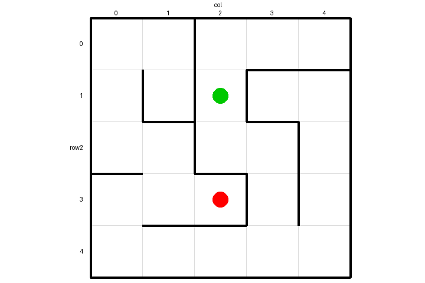
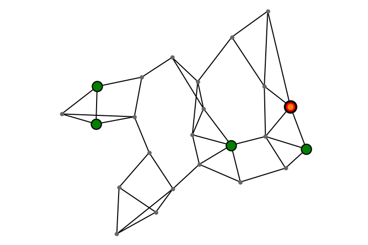
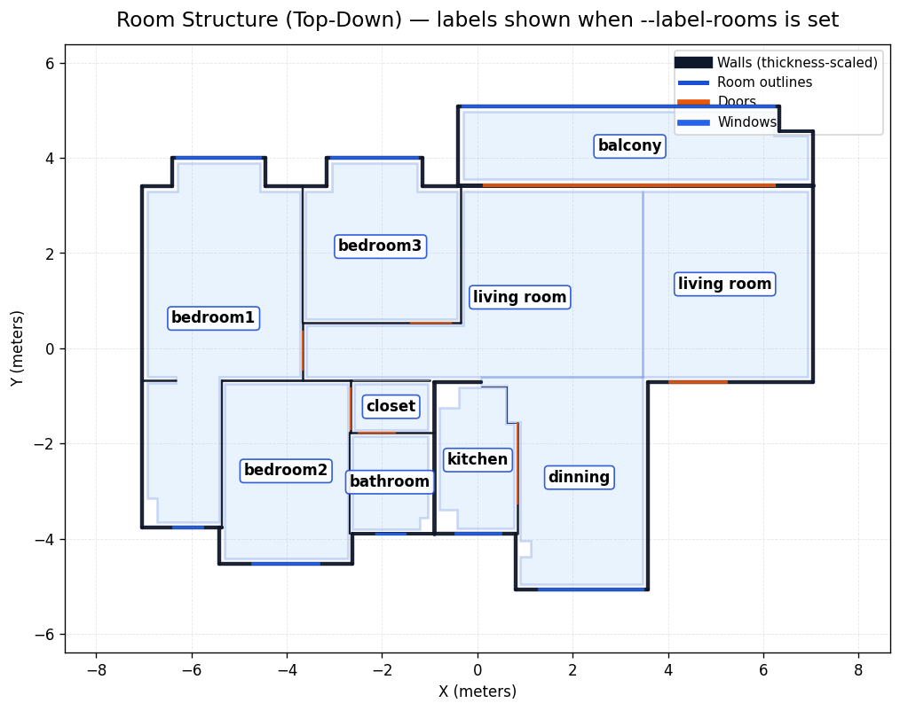
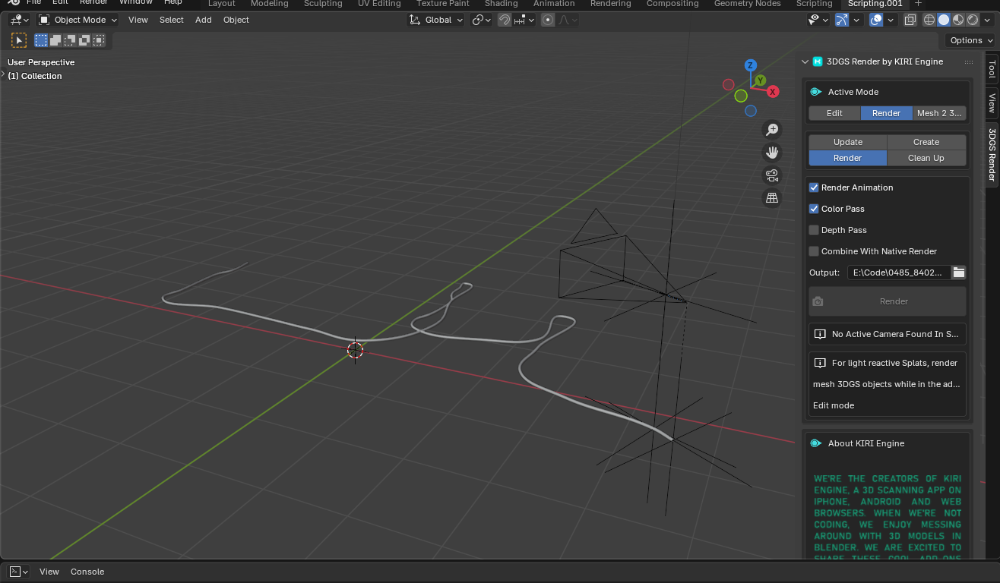
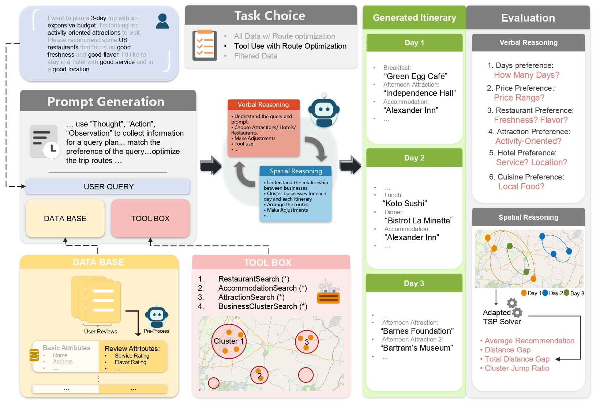

Tianlong Wang is a second-year Ph.D. student in the RISE Lab , School of Data Science, University of Virginia, advised by Prof. Sheng Li. His research focuses on spatial reasoning and planning for video generation and LLM agents; current work targets continuous-control generation via video models.
Projects
Observing Long-Term Planning Abilities in Video Generation Models
Video generation models such as CogVideo and NOVA are adapted and fine-tuned to
solve maze tasks, with solutions represented in optical-flow format. Performance
on these tasks indicates an emergent capacity for concurrent planning and generation ability in video generation models.
CogVideo generate the correct solution.

The input maze image.

The shortest path tasks demonstration.
Planning Long-Horizon, Structure-Aware Trajectories with Video Generation Models
Inspired by the previous project, video generation model's planning capability are used to create long-duration, structure-aware camera trajectories (Rotation, Transition, etc).
Develop modules for video generation models to support more precise, longer-horizon camera control.
"Salesman providing an energetic room tour".

Parsed room structure and connectivity.

The sampled path is rendered in blender
Publications

ItinBench: Benchmarking Planning Across Multiple Cognitive Dimensions with Large Language Models